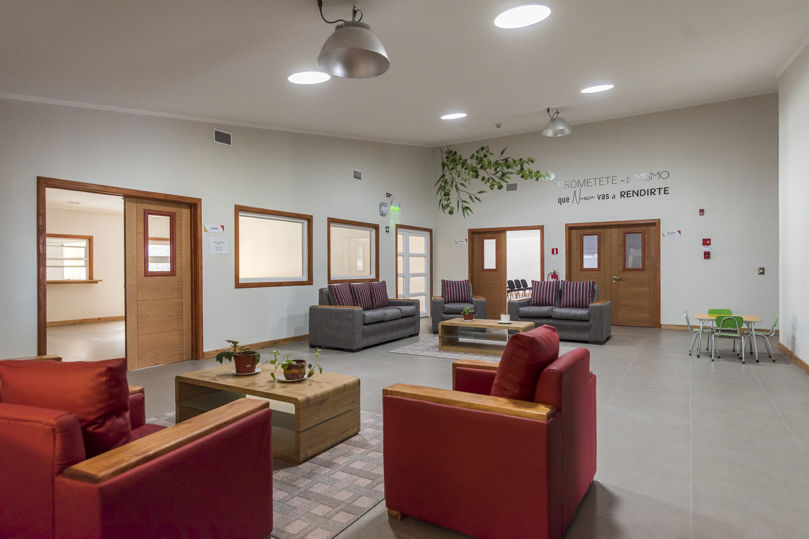

El Centro Clínico Comunitario (CCC-UACh) es una iniciativa instalada en Puerto Montt orientada a la prevención, tratamiento, seguimiento e investigación del consumo problemático de drogas y alcohol.
Brindamos atención profesional gratuita a personas mayores de 18 años, en modalidad ambulatoria intensiva, en un entorno de cálida acogida y con altos estándares de calidad.
El proyecto surge de una iniciativa del Club de Leones de Puerto Montt, fue financiado por el Gobierno Regional de Los Lagos, y su gestión operativa está a cargo de la Universidad Austral de Chile como parte de su compromiso con el bienestar territorial.

Brindar tratamiento especializado a personas con consumo problemático de drogas y alcohol mediante atención profesional gratuita, con altos estándares de calidad, en espacios de cálida acogida.
Ser un Centro Clínico y Comunitario que transmita a la sociedad la visión del cambio como una cualidad inherente al desarrollo humano.
Trabajamos desde el respeto, la dignidad de las personas, la confidencialidad, el compromiso comunitario y la mejora continua de nuestras prácticas profesionales.
Un equipo multidisciplinario al servicio de las personas y la comunidad
Directora
Psicólogo
Trabajadora Social
Terapeuta Ocupacional
Médico General
Médico Psiquiatra